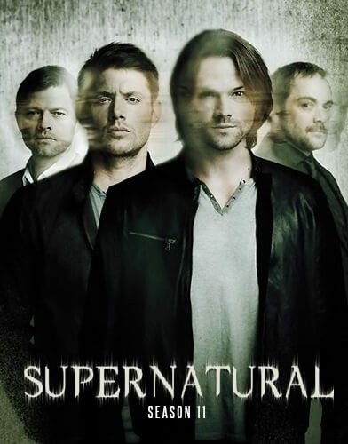
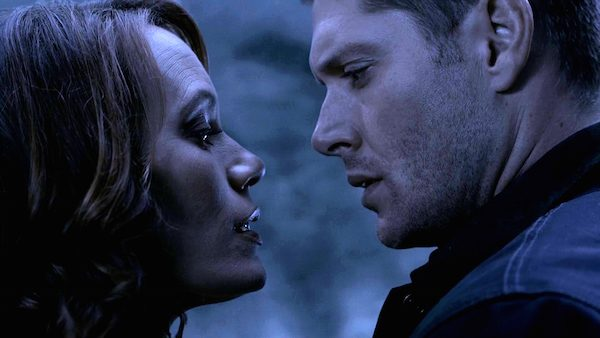
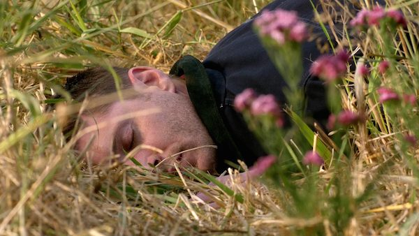
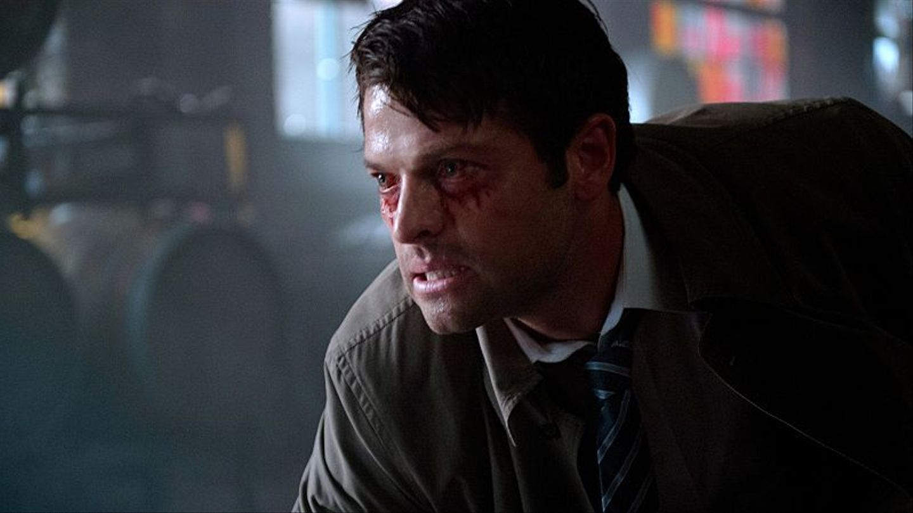
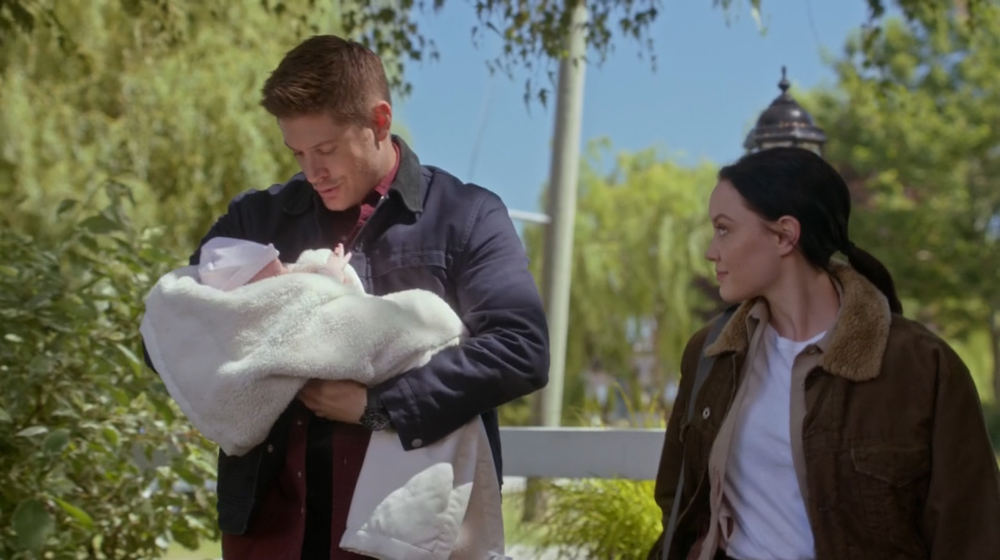
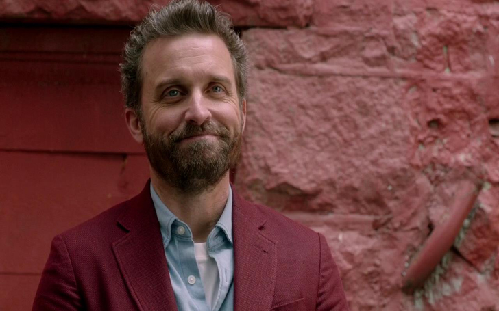
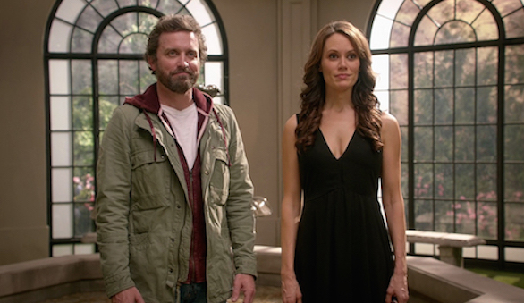

Temporada 11

Após libertarem a Escuridão, uma entidade que antecede a Morte e até mesmo Deus, a temporada segue os Winchesters e seus aliados enquanto eles se encontram lutando contra a entidade sobrenatural mais poderosa que eles já enfrentaram, diferente de tudo que eles já enfrentaram antes.
Imediatamente após sua liberação, e derrubando o Impala, Sam vê que Dean se foi e vai procurá-lo, encontrando-o em um campo onde Dean conversou com a Escuridão, o que aparentemente acaba sendo, ou pelo menos, leva A forma de uma mulher em um vestido preto. Dean diz que ela agradeceu por tê-la libertado.


Enquanto isso, Castiel ainda sofre com o feitiço de ataque de cachorro que a bruxa Rowena o submeteu e começa a atacar outros. Ele também se lembra que quando ele atacou Crowley, o Rei do Inferno escapou de sua nave atual para outra. Ele então ordena que seus lacaios demônios se livrem do feitiço que mantém seu recipiente no lugar.
Enquanto Sam e Dean dirigem para longe do antigo restaurante, eles encontram uma assistente do xerife chamada Jenna Nickerson e vão para um hospital para ajudar os outros. Ao chegar lá, eles encontram pessoas com veias negras que Sam chama de Raiva, pessoas que foram forçadas a deixar sua escuridão interior sair. Sendo este um efeito da liberação da Escuridão. Eles também encontram um bebê humano na mistura, chamado Amara. Enquanto isso, quando uma caça ao homem começa, Castiel ora aos anjos, implorando que o ajudem a não machucar os outros e está disposto a receber qualquer punição que eles lhe tragam.
Enquanto Dean, Jenna e o bebê saem do hospital, Sam, usando a si mesmo como uma distração, infecciona e começa a desenvolver veias pretas. Eventualmente, depois de orar a Deus por ajuda, ele encontra uma ceifeira chamada Billie que está aparentemente desapontada com a morte da Morte e diz que da próxima vez que Sam e Dean forem mortos, ela irá garantir que eles continuem mortos e até mesmo que ela os jogue No Vazio, um lugar do qual nenhuma alma, entidade ou ser pode escapar. Quando os anjos encontram Cass, eles começam a torturá-lo e depois que Hannah chega, ela explica que alarmes estão disparando no céu. Ele sugere que esses alarmes são para a liberação das Trevas. Enquanto as torturas continuam, Castiel escapa e Hannah morre tentando salvá-lo. Crowley consegue voltar em sua nave e seus subordinados revelam que a Escuridão está livre, especialmente quando Michael e Lúcifer aparentemente gritaram por todo o Inferno da Jaula.


Embora eles pensem que Amara parece impossível de destruir, Deus diz a Sam, Dean, Cass, Crowley e Rowena que ela tem uma fraqueza: Luz com o poder de 10.000 sóis. Então, eles coletam almas para construir uma bomba. E Dean é o único a suportar. Depois de falar com Amara, que começa a se sentir mal por atacar e quase matar seu irmão Chuck, Dean a convence a perdoá-lo. Então ela o convoca a uma área de jardim e os dois se reconciliam e decidem sair juntos por um tempo. No entanto, Amara deixa Dean com um presente de agradecimento e ele encontra sua mãe viva e ressuscitada. No entanto, no bunker aguarda uma mulher britânica que bane Cass com um sigilo de banimento e atira em Sam, deixando seu destino desconhecido.

